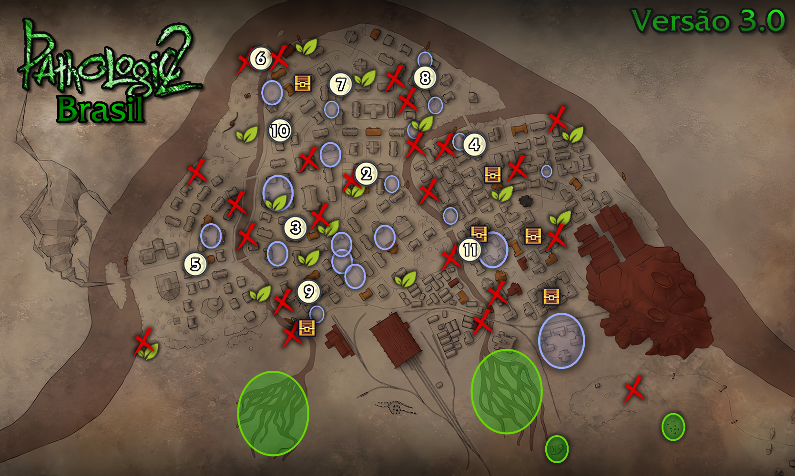
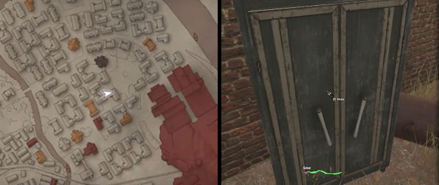
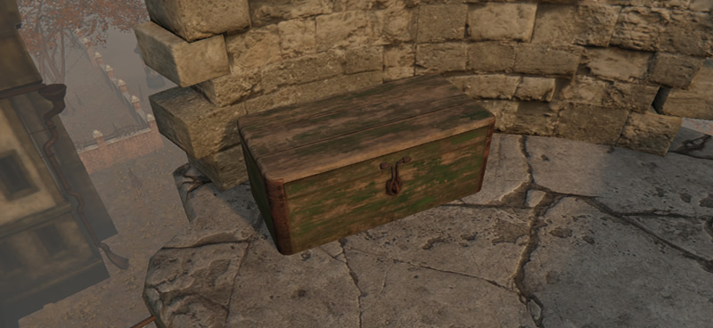
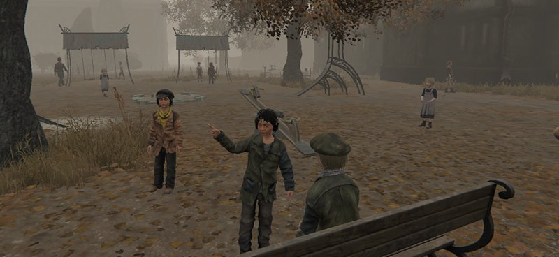

Map
Welcome to our useful map!
Here you can find out about the localization of the Dead Item Store each night, hidden item caches across the map, areas with plenty of herbs, children gathering spots, and much more!

Welcome to our useful map!
Here you can find out about the localization of the Dead Item Store each night, hidden item caches across the map, areas with plenty of herbs, children gathering spots, and much more!


The markers with a moon icon indicate the location of the Dead Item Shop on that specific night (midnight of the corresponding "day").
TIP: The Dead Item Shop will appear in a different place on the map every night, starting at 00:00 AM and remaining available until 07:30 AM.

The treasure icons indicate locations where hidden caches or storage units can be found, which can be opened to obtain random items.
BEWARE: Items will only spawn in those containers after day 2, before that, they will be empty.
TIP: Every night at 12:00 AM, the items in those caches will respawn. Therefore, visit them daily if you can.
- Below, you can see pictures of the caches and their respective locations.






The red X icons show the locations of the hidden children's chests, which contain various items.
BEWARE: The children say that every time you get an item from these chests, you must replace it with another one of equivalent value. In practice, there doesn't seem to be any penalty for ignoring this rule, so do as you must.
TIP #1: Every day those chests are restocked with new items at 07:30 AM.
TIP #2: The chests are usually hidden in the scenario so pay attention!

Those leaf markers indicate where to find "Bloody Roots" to feed and obtain herbs!
- In case of doubt about how to feed them see the section below.
TIP #1: Each Blood Root can be fed once per day, becoming hungry again at 12:00 AM the next night.
TIP #2: I recommend feeding the roots only with infected blood because it is easier to obtain, and the other type can be sold.

Those green zones indicate where you can find a decent amount of herbs on the ground.
BEWARE: The herbs will start to spawn in those areas after day two, before that none will appear at all.
TIP: The herbs will be scattered around the areas and will respawn daily at 07:30 AM.

Those blue areas indicate where you can find a decent number of children, who can be quite useful for trading.
BEWARE: No child can be found in those places late at night (from 12:00 AM to 07:30 AM), if the district is infected/destroyed, or if you have passed day 9.